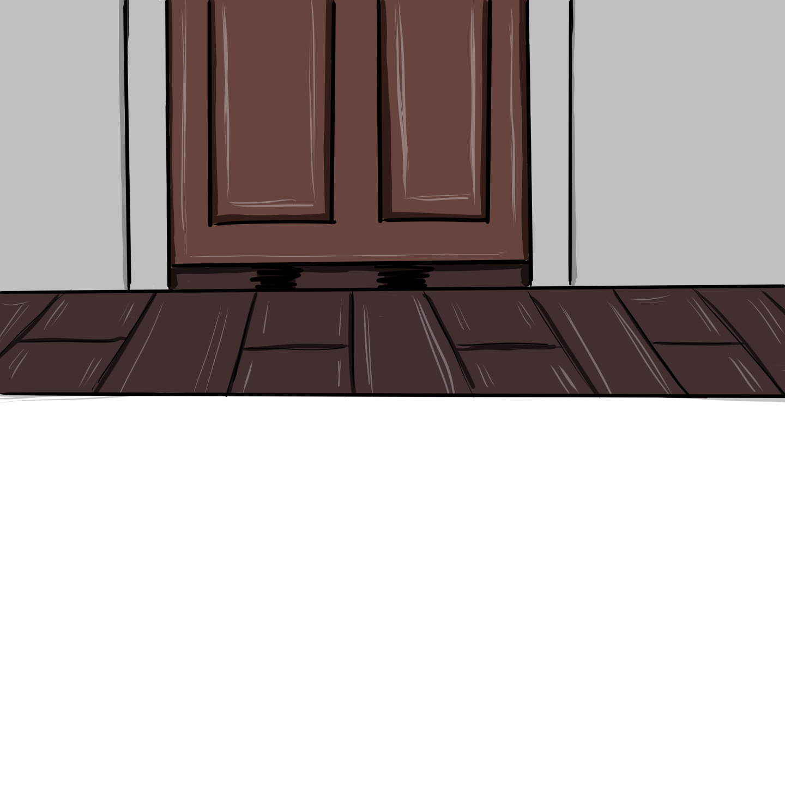

She pushed my bedroom door open (god dammit, I forgot to lock it), only to find my limp body on the carpet, sprawled out like Jesus on the cross. My wrists were facing the ceiling, evidence of the crucifixion leaking out in the form of a dark crimson liquid. She gasped and collapsed to the floor beside me. “Oh God, oh God. Dios mio, por favor no te lleves a mi hija.” I felt a fractal of guilt erupt across my belly as I heard her weep beside me. She fumbled for the phone in her pocket—an old Nokia she bought a decade ago—and dialed 911. Her pleas for help were bubbled up in snot, a funny contrast to the calm demeanor of the operator on the other end saying, “Ma'am, take a few deep breaths and stay with me.”
I had finally given in and painted my nails red like the girls she always compared me to:
those niñas inhaling acetone as they brushed another thin rose coat on,
bonding with their mamás as they picked out dresses from pinterest they liked,
stealing lipstick from the bedroom down the hall
to see how it looked on their own faces,
with oversized high heels on their feet to bring them eye to eye with the mujeres.
She can’t say I never tried, porque
yo le di una hija, una Guadalupe muerta.
As I walked away from the burning house, I was dead to her. She had been crying for days over the skin I shed. Crying and crying until her cheeks hurt. I always knew that she loved a ghost more than she loved me, so I left. How could she love someone she refused to know?
Guadalupe gave birth to a baby boy named Jesus Christ when I was born. He was crucified, but he came back. He always did.
When I woke up, I was in bed with the comforter up to my neck. I felt the weight of skin again, uncomfortably warm and sticky against me. I turned my head and there she was again, mi mamá, stroking the side of my face tenderly. How could I still love her? “I’m so glad you came back home, mija.”
I couldn’t feel her love because the skin wasn’t my own.

KNOCK
KNOCK
KNOCK
“Mija, I need your help with dinner.” She knocked on the door a few times before growing irritated. “I know you’re in there. Open up, Guadalupe. Ándale.”
A minute passed. I heard her foot tap impatiently and even saw its hyper silhouette dance across the threshold. Because of this, there was an inconsistency in how the light peeked through the gap below the door. It flickered across my face like strobe lights in a rave, only less harsh.
“Ay, en serio, Lupe—”
She was crying again as she held my wrist. “Why do you keep doing this to me?”
My fingers had burst through the leather, blood-soaked and g(r)asping for air. DULCES SUEÑOS